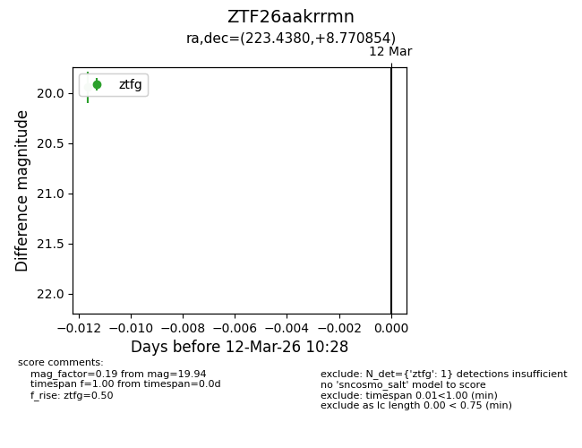
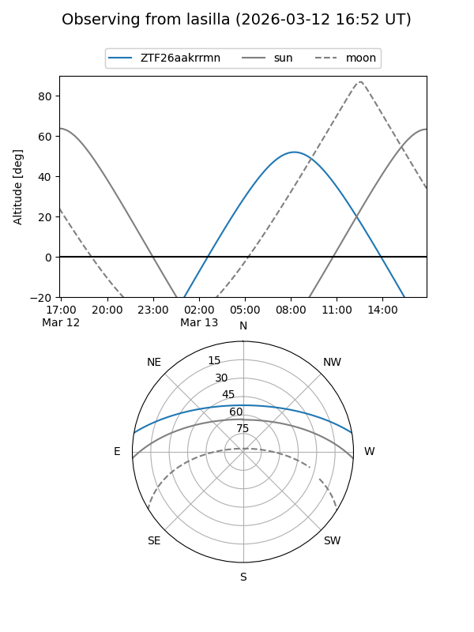
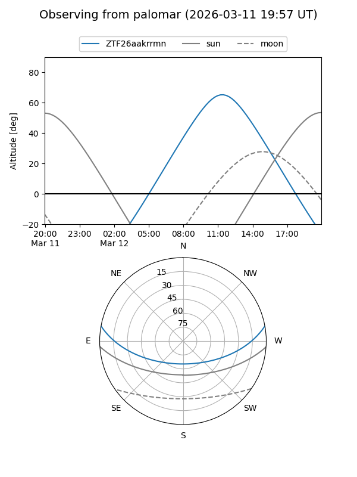

ZTF26aakrrmn
Target ZTF26aakrrmn at 2026-03-12 10:30
Aliases and brokers:
FINK: link
Lasair: link
ALeRCE: link
alt names
ZTF26aakrrmn (ztf,fink_ztf)
Coordinates:
equatorial (ra, dec) = 223.4380,+8.77085
equatorial (HMS+DMS) = 14:53:45.11,+08:46:15.07
galactic (l, b) = (6.2860,+55.77038)
Flags:
Photometry:
last ztfg=19.94
1 ztfg detections
Lightcurve

Visibility


Additional plots